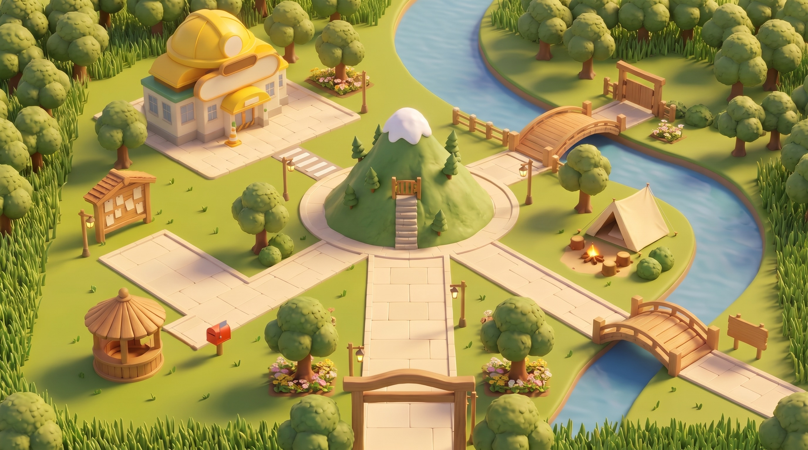

대한민국 함께, 약속 · 함께 쌓는 첫 약속약속 빌리지
실천 도장0약속 등불0약속 온도0
내 캐릭터 고르기
방향키·WASD 또는 화면을 눌러 걷기 · 열린 곳(안전체험관 · 약속산)은 더블클릭 또는 E로 입장 · Shift 또는 오래 걸으면 달리기 · 오픈예정은 곧 열려요
LOADING.

약속 빌리지를 펼치는 중
약속 빌리지는 휴대폰을 가로로 눕혀서 보면 가장 잘 보여요.

약속 빌리지를 펼치는 중